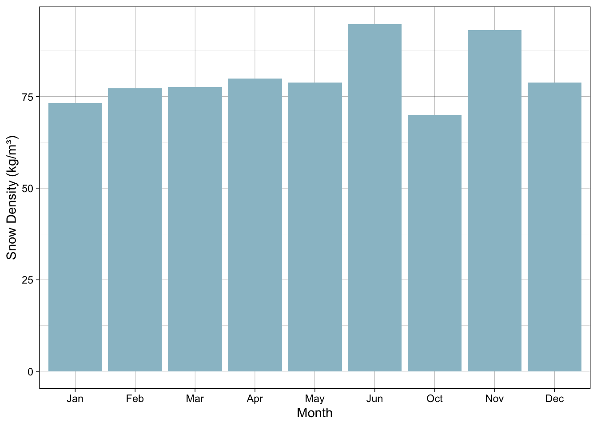
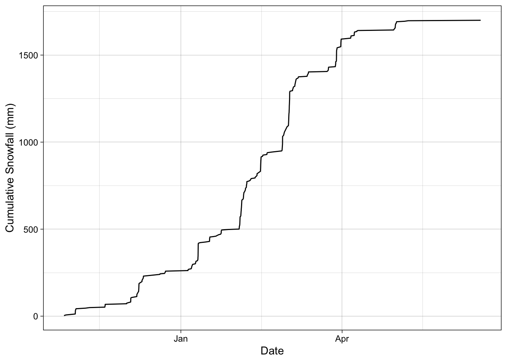
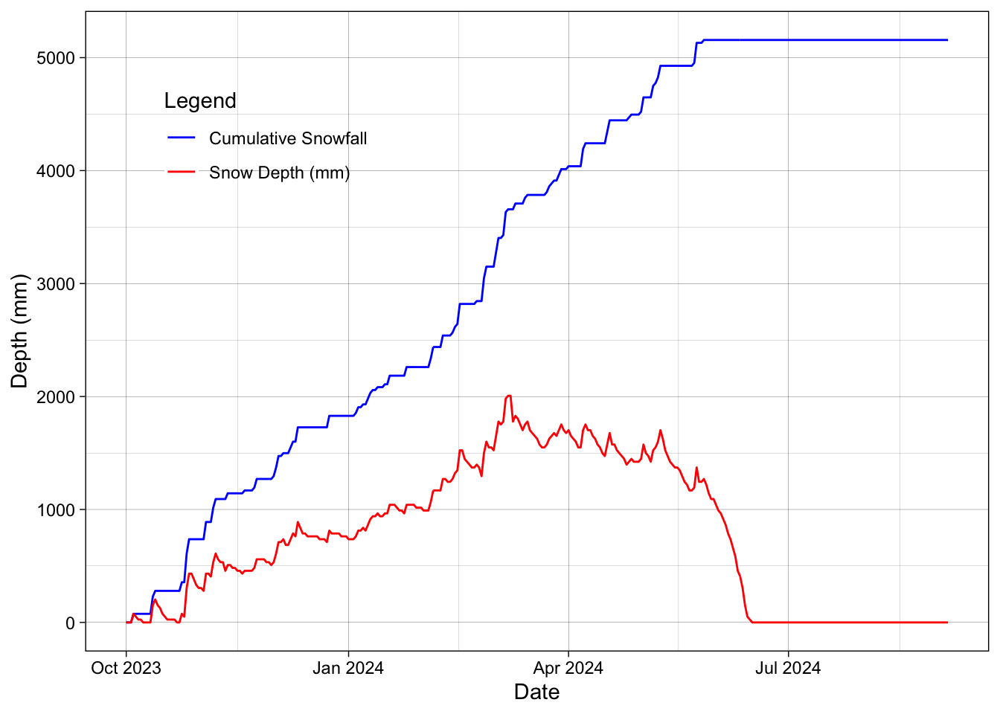
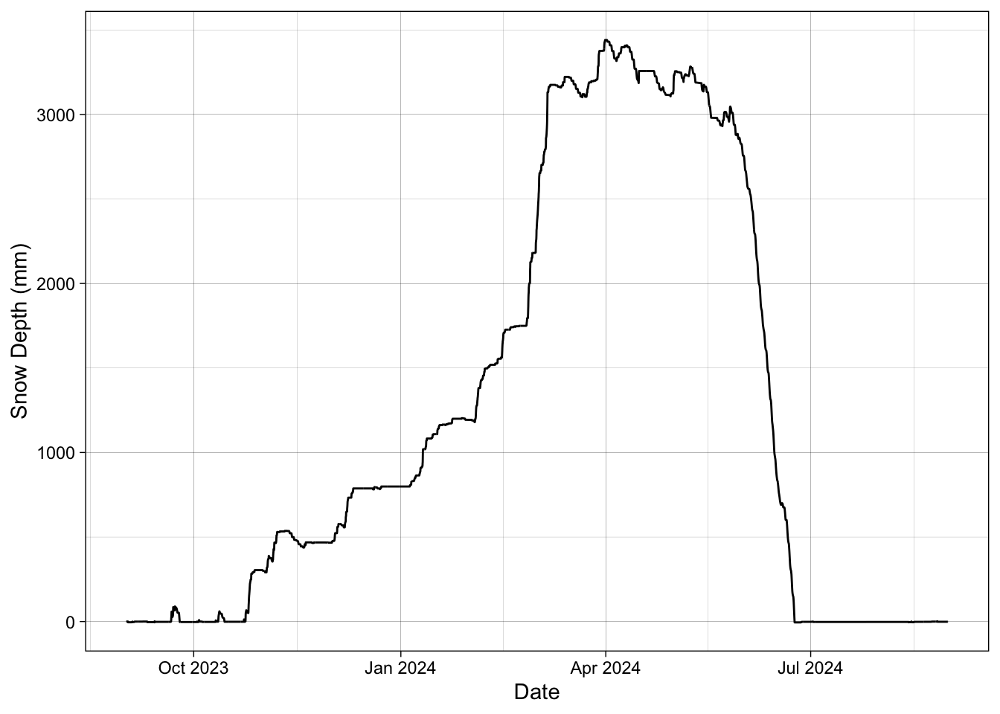
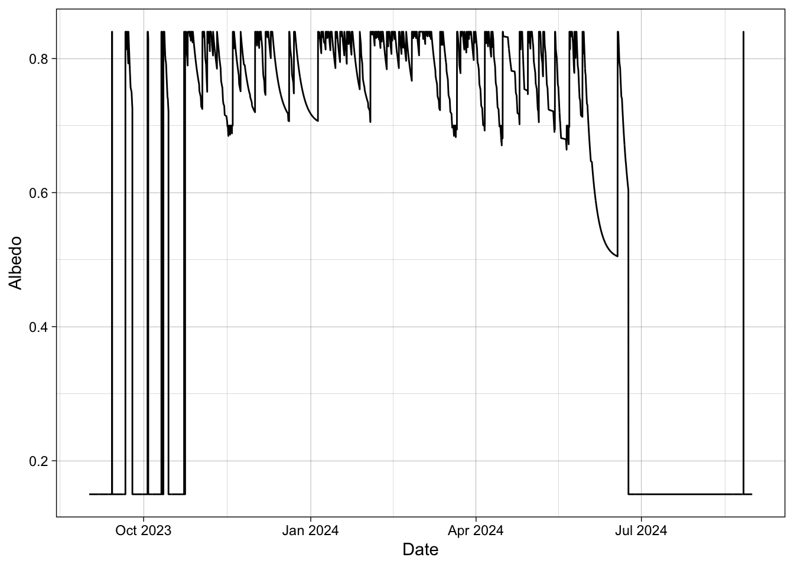
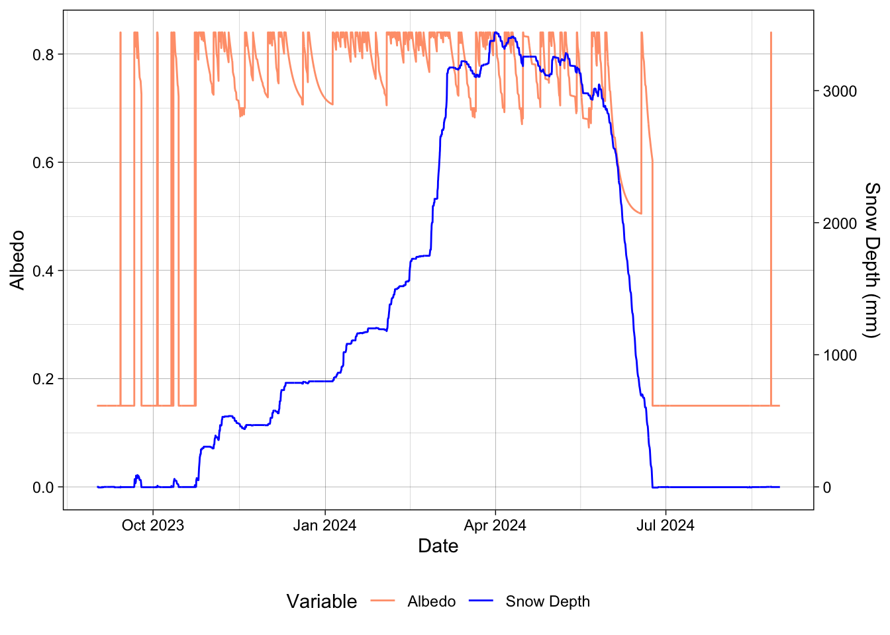
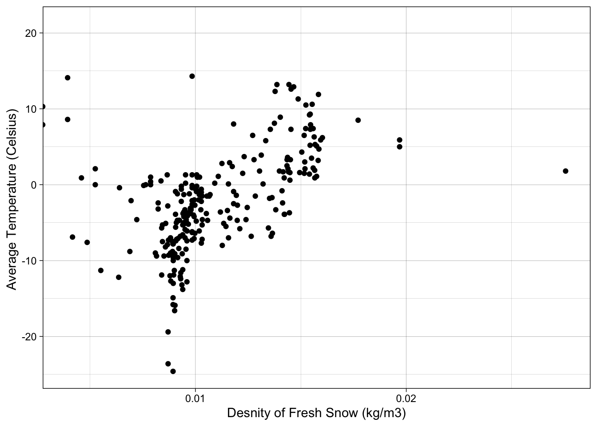

# Filter for the relevant columns
ASOS_accumulation <- ASOS_yellowstone_original %>%
select(c(valid, tmpf, p01i, relh, sknt)) %>%
mutate(tmp_c = (5/9 * (tmpf - 32))) %>%
mutate(Td = tmp_c - ((100 - relh)/5))
# Filter for only events that are below 0 degrees
ASOS_accumulation_clean <- ASOS_accumulation %>%
filter(tmp_c < 0 & Td < 0) %>%
filter(p01i > 0) %>%
filter(sknt < 10)
# Add a column that calculates the cumulative sum
ASOS_accumulation_clean <- ASOS_accumulation_clean %>%
mutate(P_mm = p01i * 24.5) %>%
mutate(cumm_prec = cumsum(P_mm)) Accumulation, Fresh Snow and Albedo
Billy Johnson Dr Fassnacht October 2024 WR 574 Snow Hydrology
Assignment 6: Accumulation, Fresh Snow and Albedo
Methods
Accumulation: The first step to begin analysis was to clean the data from ASOS. I began with calculating the dew point and converting all my units to be metric. The next step was to identify a threshold that would initiate accumulation. I conducted my analysis based on a 0°¬¬C threshold for both air temperature and dew point. To do this I filtered all the data for only observations that had meet the 0°C temperature threshold, as well as; events that included active precipitation, and for events with a wind speed less than 0 knots. With this data I then calculated for cumulative precipitation and observed the table.
Fresh Snow: The first step conducted was to filter data from the ASOS station for only observations that included active precipitation events. I then added a column in the data frame that had calculated the expected fresh snow density using Hedstrom and Pomeroy’s derived function (equation 1). Using the relationship between snow depth and depth and density I was able to calculate a column that had snowfall. (P_mm/ density) * 100). I then plotted both results (Figure 1 & 2).
s= 67.92 + 51.25 e(T/2.59) (equation 1)
Snow Depth: Using SNOTEL data first began with filter and cleaning the data. I began analysis with a lag function to find the delta snow depth. I then cleaned this data again to replace anything that was less than 0 to be a 0. Using the change in snowpack I was able to remove all observations that snow was melting. Using this clean column, I could calculate the cumulative snowfall for the year. I plotted both the observed snow depth and the cumulative snowfall.
Albedo: The first step to begin this problem was to clean and create a new data frame for the ASOS data. Because ASOS data doesn’t have snow depth we calculated snow depth first. We began with stating assumptions for a melt rate. We applied a melt rate of 0.5 mm/ hr. in temperatures where greater than 0°C. Using the previously calculated snowfall we created a loop to go through the observations and say if snow was falling add it up. We said if snow depth is greater than 0, we can have melt if temperatures go above 0°C. We added up add of the depths and that gave us cumulative snow depth at the ASOS station (figure 4). Using this data, I was able to write a function in R. This function determined if the snow depth was less than or equal to zero then label with soil albedo (0.15). If the snow depth change was greater than 0, we determined fresh snow (0.84). If snow depth change was 0 then we labeled it as freezing and we applied the US army corps of Engineers equation (equation 2), to determine albedo. If the change in snowpack was less than 0, we determined it was melting and applied the same formula but with a minimum albedo of 0.5 vs 0.7 for freezing snow. Finally, I plotted the results (figure 5). s(t) = [ s(t-1) - s-min] e-kt + s-min (equation 2)
Fresh Snow Density Calibration: Using the daily SNOTEL data I first began with creating a new data frame and filtering for only dates with fresh snow. I applied the Hedstrom and Pomeroy (equation 1) to the data to get a column with all the densities. Then I calculated for SWE using the snow depth recorded and the calculated density (using a correction for units). I then plotted the SWE recorded through the year. Results
Accumulation: Analysis of the first problem identifying the start of snowpack accumulation at Yellowstone National Park showed that the 27th of October 2023 was the beginning of snowpack accumulation. This was found by identifying the first storm events that accumulated snow for more than 5 hours with temperatures cold enough to initiate accumulation.
Fresh Snow: The average monthly fresh snow density at Yellowstone national park averaged around 75 kg/m3 throughout the year when snow was present (figure 1). The least dense month through the year was October followed by January. The highest density months seen this year was June and November. The cumulative snowfall without metamorphism was 1699 mm. The greatest amount of increase in cumulative snowfall was in the spring. Figure 1. Bar plot showing snow densities in kg/m3 for Yellowstone national park ASOS data.
Figure 2. Cumulative snowfall shown as a line graph for Yellowstone National Park ASOS station.
Snow Depth: After analysis of our SNOTEL data, we were able to compute the cumulative snow depth to be 5156.2 mm (figure 3). The highest observed snow depth at the SNOTEL station was measured on March 3, 2024, at 2006.6 mm.
Figure 3. Time series plot showing both observed snow depth at the SNOTEL station (693) as well as computed cumulative depth.
Albedo: After visual analysis of the albedo throughout the year most observations with 0.15 % albedo occurred in the summer when there was no snow to reflect light. During the winter months or time when snow was accumulating on the ground the albedo was consistently high. Snow depth from the ASOS station at Yellowstone RAMOS had a max height of 3600 mm. Snow had disappeared by July 2024 (figure 4).
Figure 4. Measured snow depth at ASOS station RAMOS in Yellowstone National Park and calculated albedo for water year 2023-2024.
Fresh Snow Density: After calculating the fresh snow density using the relationship between snow depth and SWE, we can see the relationship between the average temperature and the density of fresh snow. The relationship not significant but does show relationships.
Figure 5. Point plot showing the relationship between the average daily air temperature and fresh snow density at Yellowstone National Park.
Discussion:
Accumulation of snow beginning towards the end of October is something that seems very realistic in this area. All along the Rocky Mountains this is a consistent trend. During the month of October, we see two different storm that do not accumulate but after the third one and after temperatures have been low for a length of time the accumulation starts on October 27th. Through the analysis in the fresh snow problem one thing that came to mind was the insignificant variance between months. I assume that the months have quite different average temperatures and receive different amounts of snow, all would lead to a variance between months and the average density. In this analysis I also found that June had a very high average snow density. This is caused from one event and this high density relates to high temperatures when this event would have occurred. The cumulative snowfall made a lot of sense. Most of the snowfall occurred in the late winter which is relatable to the rest of mountainous regions in the Rocky Mountains.
Snow depth in Yellowstone National Park was as one would expect. The peak of the snow depth was in March. This is a reasonable time.
Through the albedo analysis these results seemed to line up well with the measured snow depth. The storm events that occur in October match directly with changes in Albedo. When the snow begins to melt at the end of the winter the albedo levels on average decrease. During the winter months when much of the area is covered with snow, and we have a snow depth of over 3000 mm then the average albedo % is around 0.8. There is a lot of noise at the peak snow depth because of all the flux in albedo as the snowpack starts to shirt into a melting phase.
In the last problem the hypothesis for me would have been that as temperatures got colder than the density of fresh snow would decrease. In figure 5 we have a slight inclination that as temperatures increase then the density of snow also increases thus confirming our hypothesis. This relationship is not strongly correlated but we do get a visual representation of the overall trend in data.
Code
Load in the Data
Pine Creek USGS
ASOS data PNA
SNOTEL data location: Parker Peak (683)
Questions
1. Accumulation:
Assuming that ground temperature is equal to air temperature prior to snowfall and using an appropriate threshold (e.g., 0oC dewpoint temperature) for snow to fall near the ground (state which temperature threshold you use) to initiate accumulation, determine when complete snow cover occurs (state all assumptions). What day and time is there complete snow cover at your ASOS station? (No plot, just a date and time.)
Threshold (air and dew) = 0 degrees celcius
27th of October
what constitutes complete snow cover??? =
How realistic is this (for discussion)
2. Fresh snow:
- Estimate the hourly density of the fresh snow added to the snowpack (i.e., when it is snowing) using the Hedstrom-Pomeroy or another relevant equation. Plot either the average monthly fresh snow density or the hourly fresh snow density; and
Hedstrom-Pomeroy equation = Ps-fresh = 67.92 + 51.25 e ^(Ta/2.29)
- estimate and plot the net (cumulative) hourly snow depth without metamorphism, also known as snowfall.
# for Fresh Snow Density Calibration, you "applied the Hedstrom and Pomeroy to the data ..." - you should be using the d_SWE/d_ds when d_ds > 0 to compute density
# Filter for when its snowing and add the fresh snow density to the dataframe
ASOS_accumulation_fresh <- ASOS_accumulation_clean %>%
filter(P_mm > 0 ) %>%
mutate(HP_fresh_snow = 67.92 + 51.25 * exp(tmp_c / 2.59))
# find snowfall depth with relationship between precip and density and calculate the cummualtive snowfall
ASOS_accumulation_fresh <- ASOS_accumulation_fresh %>%
mutate(snowfall = (P_mm /HP_fresh_snow) * 1000) %>%
mutate(cummulative_snowfall = cumsum(snowfall))
ASOS_accumulation_fresh <- ASOS_accumulation_fresh %>%
mutate(month = month(valid, label = TRUE))
ASOS_accumulation_fresh %>%
group_by(month) %>%
summarise(avg_density = mean(HP_fresh_snow, na.rm = TRUE)) %>%
ggplot(aes(x = month, y = avg_density)) +
geom_bar(stat = "identity", fill = "lightblue3")+
labs(
x = "Month",
y = "Snow Density (kg/m³)")+
theme_linedraw()
# Plot for cummulative snowfall
ASOS_accumulation_fresh %>%
ggplot(aes(x = valid, y = cummulative_snowfall))+
geom_line()+
labs(
x = "Date",
y = "Cumulative Snowfall (mm)"
)+
theme_linedraw()
write_csv(ASOS_accumulation_fresh, "DataOut/ASOS_accumulation_fresh.csv") 3. Snow Depth: From the daily SNOTEL snow depth data, compute the cumulative “snowfall,” i.e., the sum of all positive snow depth amounts. On the same graph, compare the computed snowfall to the amount of snow measured on the ground (observed snow depth).
SNOTEL_Parker_clean <- SNOTEL_Parker %>%
mutate(`SNWD.I-1 (in)` = ifelse(`SNWD.I-1 (in)` < 0, 0, `SNWD.I-1 (in)`)) %>%
mutate(snow_depth_mm = `SNWD.I-1 (in)` * 25.4) %>%
mutate(delta_snowdepth = snow_depth_mm - lag(snow_depth_mm, 1))
SNOTEL_Parker_clean <- SNOTEL_Parker_clean %>%
mutate(delta_snowdepth = ifelse(delta_snowdepth < 0, 0, delta_snowdepth)) %>%
mutate(delta_snowdepth = replace_na(delta_snowdepth, 0)) %>%
mutate(cumm_snowdepth = cumsum(delta_snowdepth))
SNOTEL_Parker_clean <- SNOTEL_Parker_clean %>%
mutate(Date = mdy(Date))
SNOTEL_Parker_clean %>%
ggplot(aes(x = Date)) +
geom_line(aes(y = cumm_snowdepth, color = "Cumulative Snowfall")) +
geom_line(aes(y = snow_depth_mm, color = "Snow Depth (mm)")) +
labs(
x = "Date",
y = "Depth (mm)",
color = "Legend") + # Add a label for the legend
scale_color_manual(values = c("Cumulative Snowfall" = "blue",
"Snow Depth (mm)" = "red"))+
theme_linedraw()+
theme(legend.position = c(0.2, 0.8), # Position the legend inside the plot
legend.background = element_rect(fill = "transparent"))Warning: A numeric `legend.position` argument in `theme()` was deprecated in ggplot2
3.5.0.
ℹ Please use the `legend.position.inside` argument of `theme()` instead.
write_csv(SNOTEL_Parker_clean, file = "DataOut/Snotel_clean.csv")4. Albedo: Estimate and plot the albedo on an hourly basis. State the assumption for the albedo for soil when there is no snow accumulated. Use a fresh snow albedo of 0.84, and the first order exponential function to model albedo. After a snowfall without melting allow albedo to decay to 0.70 and to 0.50 during melt, i.e., T > 0oC.
fresh_snow_albedo = 0.84 snowfall_without_melt = 0.70 snowfall_with_melt = 0.50
ASOS_yellowstone_clean <- ASOS_yellowstone_original %>%
select(!c(lon, lat, metar, elevation, skyc1, skyc2, skyc3, skyc4, skyl1:skyl4, wxcodes)) %>%
mutate(tmp_c = 5/9 * (tmpf - 32)) %>%
mutate(P_mm = p01i * 25.4)
ASOS_yellowstone_clean_2 <- ASOS_yellowstone_clean %>%
mutate(meltrate = ifelse(tmp_c > 0, tmp_c * 0.5, 0)) %>%
mutate(HP_fresh_snow = 67.92 + 51.25 * exp(tmp_c / 2.59)) %>%
mutate(snowfall = (P_mm /HP_fresh_snow) * 1000) %>%
mutate(cummulative_snowfall = cumsum(snowfall))the first order exponential function –> y = Ae^Bx From the ASOS station, we are calculating it for something down the road.
# Create vectors from the columns
melts <- ASOS_yellowstone_clean_2$meltrate
falls <- ASOS_yellowstone_clean_2$snowfall
# Initialize an empty vector for snow depth and snowdepth counter
depths <- numeric(length(falls)) # Pre-allocate space for efficiency
snowdepth <- 0
# Loop through the falls vector and apply the logic
for (i in seq_along(falls)) {
snowdepth <- snowdepth + falls[i] # Add snowfall
# Apply the melt if snowdepth is greater than 0
if (snowdepth > 0) {
melt <- melts[i]
} else {
melt <- 0
}
snowdepth <- snowdepth - melt # Subtract the melt from snowdepth
# Store the result in the depths vector
depths[i] <- snowdepth
}
# Add the calculated depths back to the dataframe if needed
ASOS_yellowstone_clean_2$snowdepth <- depths
ASOS_yellowstone_clean_2 <- ASOS_yellowstone_clean_2 %>%
mutate(delta_snow_depth = snowdepth - lag(snowdepth, 1))ASOS_yellowstone_clean_2 %>%
ggplot(aes(x = valid, y = snowdepth))+
geom_line()+
theme_linedraw()+
labs(
x = "Date",
y = "Snow Depth (mm)"
)
soil_albedo <- 0.15
fresh_albedo <- 0.84
freezing_min_albedo <- 0.70
melting_min_albedo <- 0.50
k <- 0.01
calculate_albedo <- function(prev_albedo, snowdepth, snow_depth_change) {
if (snowdepth <= 0) {
return(soil_albedo)
} else if (snow_depth_change > 0) {
return(fresh_albedo)
} else if (snow_depth_change == 0) {
return(pmax(freezing_min_albedo, prev_albedo * exp(-k) + freezing_min_albedo * (1 - exp(-k))))
} else if (snow_depth_change < 0) {
return(pmax(melting_min_albedo, prev_albedo * exp(-k) + melting_min_albedo * (1 - exp(-k))))
} else {
return(NA_real_)
}
}
ASOS_yellowstone_clean_2 <- ASOS_yellowstone_clean_2 %>%
arrange(valid) %>% # Ensure the data is in chronological order
mutate(
prev_snowdepth = lag(snowdepth, default = first(snowdepth)),
snow_depth_change = snowdepth - prev_snowdepth
) %>%
mutate(
albedo = accumulate2(
.x = snowdepth,
.y = snow_depth_change,
.f = calculate_albedo,
.init = soil_albedo
)[-1] # Remove the initial value
) %>%
select(-prev_snowdepth, -snow_depth_change) # Remove temporary columns
# Print the first few rows to check the result
print(head(ASOS_yellowstone_clean_2))# A tibble: 6 × 28
station valid tmpf dwpf relh drct sknt p01i alti mslp
<chr> <dttm> <dbl> <dbl> <dbl> <chr> <chr> <dbl> <dbl> <chr>
1 P60 2023-09-01 00:56:00 46 34 62.7 null 3.00 0 30.2 1015.20
2 P60 2023-09-01 01:56:00 46 37 70.6 0.00 0.00 0 30.2 1014.30
3 P60 2023-09-01 02:56:00 42 36 79.1 310.00 3.00 0 30.1 1013.80
4 P60 2023-09-01 03:56:00 40 35 82.2 0.00 0.00 0 30.1 1013.40
5 P60 2023-09-01 04:56:00 39 35 85.4 310.00 3.00 0 30.1 1013.30
6 P60 2023-09-01 05:56:00 38 36 92.4 290.00 3.00 0 30.1 1013.50
# ℹ 18 more variables: vsby <chr>, gust <chr>, ice_accretion_1hr <chr>,
# ice_accretion_3hr <chr>, ice_accretion_6hr <chr>, peak_wind_gust <chr>,
# peak_wind_drct <chr>, peak_wind_time <chr>, feel <chr>, snowdepth <dbl>,
# tmp_c <dbl>, P_mm <dbl>, meltrate <dbl>, HP_fresh_snow <dbl>,
# snowfall <dbl>, cummulative_snowfall <dbl>, delta_snow_depth <dbl>,
# albedo <dbl>graph
ASOS_yellowstone_clean_2 %>%
ggplot()+
geom_line(aes(x = valid, y = albedo))+
theme_linedraw()+
labs(
x = "Date",
y = "Albedo"
)
ASOS_yellowstone_clean_2 %>%
ggplot(aes(x = valid)) +
geom_line(aes(y = albedo, color = "Albedo")) +
geom_line(aes(y = snowdepth / max(snowdepth, na.rm = TRUE) * max(albedo, na.rm = TRUE), color = "Snow Depth")) +
scale_y_continuous(
name = "Albedo",
sec.axis = sec_axis(~ . * max(ASOS_yellowstone_clean_2$snowdepth, na.rm = TRUE) / max(ASOS_yellowstone_clean_2$albedo, na.rm = TRUE),
name = "Snow Depth (mm)")
) +
scale_color_manual(values = c("Albedo" = "#FFA07A", "Snow Depth" = "blue")) +
theme_linedraw() +
labs(
x = "Date",
color = "Variable"
) +
theme(legend.position = "bottom")
write_csv(ASOS_yellowstone_clean_2, file = "DataOut/ASOS_clean_2.csv")5. Fresh Snow Density Calibration: Use your daily SNOTEL SWE, snow depth, and temperature data to develop a relation between fresh snow density and average air temperature. State your assumptions and the reliability of the relation.
Fresh_snow_calibration <- SNOTEL_Parker_clean %>%
mutate( SWE = `WTEQ.I-1 (in)`) %>%
mutate(density_fresh_snow = SWE/snow_depth_mm) Fresh_snow_calibration %>%
ggplot(aes(x = density_fresh_snow, y = `TAVG.D-1 (degC)`))+
geom_point()+
theme_linedraw()+
labs(
y = "Average Temperature (Celsius) ",
x = "Desnity of Fresh Snow (kg/m3)"
)Warning: Removed 89 rows containing missing values or values outside the scale range
(`geom_point()`).